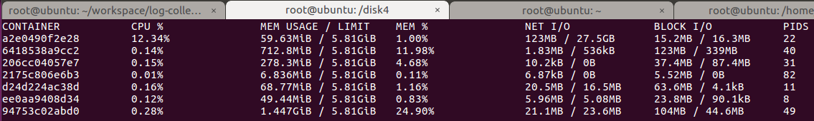

The number of monitoring solutions is daunting. New solutions are coming on the scene continuously, and existing solutions evolve in functionality. Rather than looking at each solution in depth, I’ve taken the approach of drawing high-level comparisons. With this approach, readers can hopefully “narrow the list” and do more serious evaluations of solutions best suited to their own needs.
The monitoring solutions covered here include:
In the following sections, I suggest a framework for comparing monitoring solutions, present a high-level comparison of each, and then discuss each solution in more detail by addressing how each solution works with Rancher. I also cover a few additional solutions you may have come across that did not make my top 10.
1.3.1.1. A Framework for Comparison
A challenge with objectively comparing monitoring solutions is that architectures, capabilities, deployment models, and costs can vary widely. One solution may extract and graph Docker-related metrics from a single host while another aggregates data from many hosts, measures application response times, and sends automated alerts under particular conditions.
Having a framework is useful when comparing solutions. I’ve somewhat arbitrarily proposed the following tiers of functionality that most monitoring solutions have in common as a basis for my comparison. Like any self-respecting architectural stack, this one has seven layers.

- Host Agents – The host agent represents the “arms and legs” of the monitoring solution, extracting time-series data from various sources like APIs and log files. Agents are usually installed on each cluster host (either on-premises or cloud-resident) and are themselves often packaged as Docker containers for ease of deployment and management.
- Data gathering framework – While single-host metrics are sometimes useful, administrators likely need a consolidated view of all hosts and applications. Monitoring solutions typically have some mechanism to gather data from each host and persist it in a shared data store.
- Datastore – The datastore may be a traditional database, but more commonly it is some form of scalable, distributed database optimized for time-series data comprised of key-value pairs. Some solutions have native datastores while others leverage pluggable open-source datastores.
- Aggregation engine – The problem with storing raw metrics from dozens of hosts is that the amount of data can become overwhelming. Monitoring frameworks often provide data aggregation capabilities, periodically crunching raw data into consolidated metrics (like hourly or daily summaries), purging old data that is no longer needed, or re-factoring data in some fashion to support anticipated queries and analysis.
- Filtering & Analysis – A monitoring solution is only as good as the insights you can gain from the data. Filtering and analysis capabilities vary widely. Some solutions support a few pre-packaged queries presented as simple time-series graphs, while others have customizable dashboards, embedded query languages, and sophisticated analytic functions.
- Visualization tier – Monitoring tools usually have a visualization tier where users can interact with a web interface to generate charts, formulate queries and, in some cases, define alerting conditions. The visualization tier may be tightly coupled with the filtering and analysis functionality, or it may be separate depending on the solution.
- Alerting & Notification – Few administrators have time to sit and monitor graphs all day. Another common feature of monitoring systems is an alerting subsystem that can provide notification if pre-defined thresholds are met or exceeded.
Beyond understanding how each monitoring solution implements the basic capabilities above, users will be interested in other aspects of the monitoring solution as well:
- Completeness of the solution
- Ease of installation and configuration
- Details about the web UI
- Ability to forward alerts to external services
- Level of community support and engagement (for open-source projects)
- Availability in Rancher Catalog
- Support for monitoring non-container environments and apps
- Native Kubernetes support (Pods, Services, Namespaces, etc.)
- Extensibility (APIs, other interfaces)
- Deployment model (self-hosted, cloud)
- Cost, if applicable
1.3.1.2. Comparing Our 10 Monitoring Solutions
The diagram below shows a high-level view of how our 10 monitoring solutions map to our seven-layer model, which components implement the capabilities at each layer, and where the components reside. Each framework is complicated, and this is a simplification to be sure, but it provides a useful view of which component does what. Read on for additional detail.

Additional attributes of each monitoring solution are presented in a summary fashion below. For some solutions, there are multiple deployment options, so the comparisons become a little more nuanced.

1.3.1.3. Looking at Each Solution in More Depth
DOCKER STATS
https://www.docker.com/docker-community
At the most basic level, Docker provides built-in command monitoring for Docker hosts via thedocker statscommand. Administrators can query the Docker daemon and obtain detailed, real-time information about container resource consumption metrics, including CPU and memory usage, disk and network I/O, and the number of running processes. Docker stats leverages the Docker Engine API to retrieve this information. Docker stats has no notion of history, and it can only monitor a single host, but clever administrators can write scripts to gather metrics from multiple hosts.
Docker stats is of limited use on its own, butdocker statsdata can be combined with other data sources like Docker log files anddocker eventsto feed higher level monitoring services. Docker only knows about metrics reported by a single host, so Docker stats is of limited use monitoring Kubernetes or Swarm clusters with multi-host application services. With no visualization interface, no aggregation, no datastore, and no ability to collect data from multiple hosts, Docker stats does not fare well against our seven-layer model. Because Rancher runs on Docker, basicdocker statsfunctionality is automatically available to Rancher users.
我将讨论的第一个工具是Docker本身。你可能不知道Docker客户端已经提供了基本的命令行工具来检查容器的资源消耗。想要查看容器统计信息只需运行docker stats [CONTAINER_NAME]。这样就可以查看每个容器的CPU利用率、内存的使用量以及可用内存总量。请注意，如果你没有限制容器内存，那么该命令将显示您的主机的内存总量。但它并不意味着你的每个容器都能访问那么多的内存。另外，还可以看容器通过网络发送和接收的数据总量。

CADVISOR
https://github.com/google/cadvisor
cAdvisor (container advisor) is an open-source project that like Docker stats provides users with resource usage information about running containers. cAdvisor was originally developed by Google to manage its lmctfy containers, but it now supports Docker as well. It is implemented as a daemon process that collects, aggregates, processes, and exports information about running containers.
cAdvisor exposes a web interface and can generate multiple graphs but, like Docker stats, it monitors only a single Docker host. It can be installed on a Docker machine either as a container or natively on the Docker host itself.
cAdvisor itself only retains information for 60 seconds. cAdvisor needs to be configured to log data to an external datastore. Datastores commonly used with cAdvisor data include Prometheus and InfluxDB. While cAdvisor itself is not a complete monitoring solution, it is often a component of other monitoring solutions. Before Rancher version 1.2 (late December), Rancher embedded cAdvisor in therancher-agent(for internal use by Rancher), but this is no longer the case. More recent versions of Rancher use Docker stats to gather information exposed through the Rancher UI because they can do so with less overhead.
Administrators can easily deploy cAdvisor on Rancher, and it is part of several comprehensive monitoring stacks, but cAdvisor is no longer part of Rancher itself.
PROMETHEUS
Prometheus is a popular, open-source monitoring and alerting toolkit originally built at SoundCloud. It is now a CNCF project, the company’s second hosted project after Kubernetes. As a toolkit, it is substantially different from monitoring solutions described thus far. A first major difference is that rather being offered as a cloud service, Prometheus is modular and self-hosted, meaning that users deploy Prometheus on their clusters whether on-premises or cloud-resident.
Rather than pushing data to a cloud service, Prometheus installs on each Docker host and pulls or “scrapes” data from an extensive variety of exporters available to Prometheus via HTTP. Some exporters are officially maintained as a part of the Prometheus GitHub project, while others are external contributions. Some projects expose Prometheus metrics natively so that exporters are not needed. Prometheus is highly extensible. Users need to mind the number of exporters and configure polling intervals appropriately depending on the amount of data they are collecting.
The Prometheus server retrieves time-series data from various sources and stores data in its internal datastore. Prometheus provides features like service discovery, a separate push gateway for specific types of metrics and has an embedded query language (PromQL) that excels at querying multidimensional data. It also has an embedded web UI and API. The web UI in Prometheus provides good functionality but relies on users knowing PromQL, so some sites prefer to use Grafana as an interface for charting and viewing cluster-related metrics.
Prometheus has a discrete Alert Manager with a distinct UI that can work with data stored in Prometheus. Like other alert managers, it works with a variety of external alerting services including email, Hipchat, Pagerduty, #Slack, OpsGenie, VictorOps, and others.
Because Prometheus is comprised of many components, and exporters need to be selected and installed depending on the services monitored, it is more difficult to install; but as a free offering, the price is right.
While not quite as refined as tools like Datadog or Sysdig, Prometheus offers similar functionality, extensive third-party software integrations, and best-in-class cloud monitoring solutions. Prometheus is aware of Kubernetes and other container management frameworks. An entry in the Rancher Catalog developed by Infinityworks makes getting started with Prometheus easier when Cattle is used as the Rancher orchestrator but, because of the wide variety of configuration options, administrators need to spend some time to get it properly installed and configured.
Infinityworks have contributed useful add-ons including theprometheus-rancher-exporter that exposes the health of Rancher stacks and hosts obtained from the Rancher API to a Prometheus compatible endpoint. For administrators who don’t mind going to a little more effort, Prometheus is one of the most capable monitoring solutions and should be on your shortlist for consideration.
HEAPSTER
https://github.com/kubernetes/heapster
Heapster is another solution that often comes up related to monitoring-container environments. Heapster is a project under the Kubernetes umbrella that helps enable container-cluster monitoring and performance analysis. Heapster specifically supports Kubernetes and OpenShift and is most relevant for Rancher users running Kuberenetes as their orchestrator. It is not typically be used with Cattle or Swarm.
People often describe Heapster as a monitoring solution, but it is more precisely a “cluster-wide aggregator of monitoring and event data.” Heapster is never deployed alone; rather, it is a part of a stack of open-source components. The Heapster monitoring stack is typically comprised of:
- A data gathering tier – e.g., cAdvisor accessed with the
kubeleton each cluster host - Pluggable storage backends – e.g., ElasticSearch, InfluxDB, Kafka, Graphite, or roughly a dozen others
- A data visualization component – Grafana or Google Cloud Monitoring
A popular stack is comprised of Heapster, InfluxDB, and Grafana, and this combination is installed by default on Rancher when users choose to deploy Kubernetes. Note that these components are considered add-ons to Kubernetes, so they may not be automatically deployed with all Kubernetes distributions.
One of the reasons that InfluxDB is popular is that it is one of the few data backends that supports both Kubernetes events and metrics, allowing for more comprehensive monitoring of Kubernetes.
Note that Heapster does not natively support alerting or services related to Application Performance Management (APM) found in commercial cloud-based solutions or Prometheus. Users that need monitoring services can supplement their Heapster installation using Hawkular, but this is not automatically configured as part of the Rancher deployment and will require extra user effort.